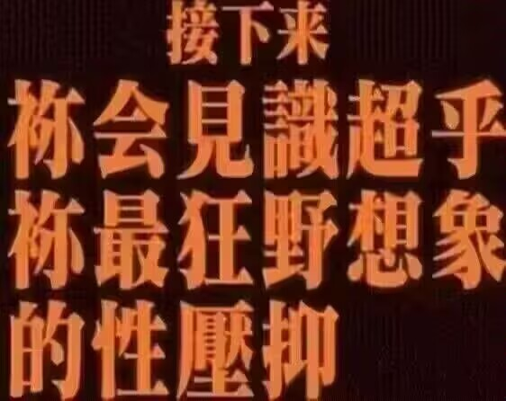
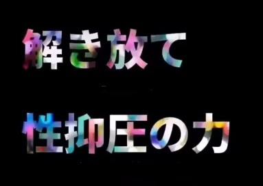
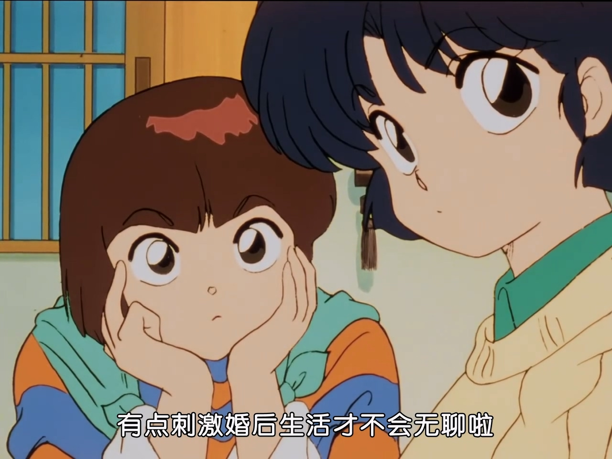
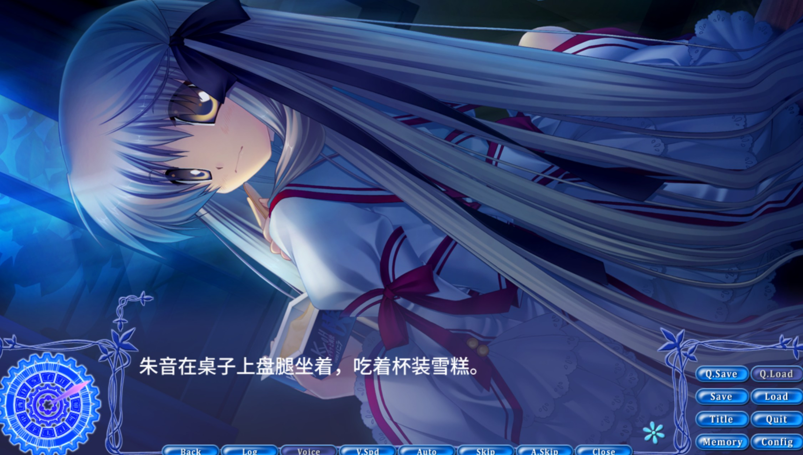

由于代码架构方面问题所以要点下面链接跳转一下：
您是否已满18岁？
点击这里
不是，我真的写不出来啊。真的要看吗？
目前水平：

 、
、
——————————————————————————————————————————
以下性压抑文主要灵感来自：
【PGN】你会见识超乎你最狂野想象的炫压抑——优米雅的炼金工房
https://www.bilibili.com/video/BV1RsdHYhE5W

在看完视频之后我不由得立即肃然起敬，将其奉为圭臬、五拜三叩。作者用得那神采飞扬的声音，每每讲至激情之处声调毫不做作又自然地飞升八度；用得那欲壑难填至极的文字，每个比喻恰似照虎画猫一般夸张却又不失原味；那恰到好处的配图，竟能如此滔滔不绝如江海般引经据典旁征博引；最终竟造就出如此慷慨激昂能教人拍案叫绝的——性压抑视频。
我说你他妈真厉害，我也要写一个。于是这就是本文诞生契机了。

——————————————————————————————————————————
像往常一样，平平无奇的早上，我从睡梦中醒来。
突然，一个念头从脑海中穿过，我说，我现在是朱音厨了。
我不知道这种毫无征兆的感觉是从何而来的，因为距离我玩完Rewrite已经过去相当一段时间了，就算我喜欢朱音那也应该是刚打完游戏时的事了。于是，我开始苦思冥想，为何过去数年之久，才像一记回旋镖一样重新击中我的身心。
如果要继续这个议题，不得不追溯到很久之前，在小朋友的性癖被完全毁掉之前。
我们对某个角色的喜爱程度一定程度上反映了自己喜好，如今大家称这个为党争，比如一堆后宫向就会有一大群二次元肥宅读者观众说这是我老婆那是我老婆喜欢喜欢喜欢喜欢，然后互相打打打打打打得乐此不疲，虽然可以看得出人和人的喜好有很明显区分，但即使如此，总有几个角色人气遥遥领先。
在早年的《CLANNAD》中，杏和智代是两个高人气角色，投票榜上总是不分伯仲。在十多年前，你让我在这两者之间选，我肯定是要选智代的。（不要吐槽“啊整天选选选选，选完了打印出来吗”。这里只是用偏好作个引子。）
智代转身时飘起的银灰长发渐渐落下、那是不可触碰的高岭之花留下的余香，把春原踢到无限浮空再一脚终结、那是本游中不容置疑绝对武力存在的彰显，彬彬有礼为人平等文静贤惠的谈吐、那是象征着校园优等生华丽完美的自信。无不例外，这一切全是青少年所想要得到的东西——美少女、武力、地位。这一切俘获了无数阿宅的性癖启蒙。就像你现在把美少女和高达做一起，那铁定热门的。
不过，后来我的关注点起了变化。
首先是智代After。这里说的不是动画的那个后续，而是作为游戏更后续的后续。按道理说，智代有after，而杏没有，似乎是智代的人气更高一筹。当时是智代厨的我也是这么想的。而且智代更好不是吗？但玩了之后我发现了问题所在。
智代并不是一个非常活泼外向的角色。在智代after里，贤惠似乎才是智代的代名词，大和抚子似乎才是智代的理想描绘。每日朋也捡垃圾回家后智代嘘寒问暖，在喜闻乐见的成人向剧情里有求必应，照顾某人私生子时智代尽显母爱关怀，在某段狗血剧情之后捧着昏了头的朋也不离不弃。这不是很好吗？是啊，这很好。但这不对。这样的生活太温柔，太祥和，——也太虚假了。

我相信谈恋爱的时候两个人不会因为“你好爱我我好爱你”，两个人就高兴得乐开了花。朋也和智代两个人都像“善良体贴”这四个字一样彬彬有礼，就算麻枝准擅长无厘头剧情也巧妇难为无米之炊，剧本想破脑袋也想不出来这两个人能讲出什么相声，于是——加人。
两个人做爱的时候鹰文从柜子里蹦出来了。
两个人做爱的时候鹰文从柜子里蹦出来了。
两个人做爱的时候鹰文从柜子里蹦出来了。
哎这……要不还是别加了吧。
言归正传，我看不到智代的自我。在这里，她唯一的塑造就是对朋也的忠贞不渝。这不是她的自我。这是为了把游戏卖出去的绝对妥协，一个绝对忠诚温柔的女友将会俘获无数阿宅消费者的心。文静矜持、温柔体贴、矢志不渝，这是典型的大和抚子——而大和抚子绝对是一个贬义词。你说一个活生生的人难道会只有矜持吗？人的感情是可以被抑制到这么单薄的吗？现在地球这个逼样，人活着哪有不疯的？你要是有个女朋友出门在外回家在里怎么都一副不为所动笑容容的样子，那是人吗？回答我！那是中了催眠APP！
现在要我来选的话，我在天平中渐渐倾向了那个时而话里有话，时而怒火中烧，时而阴险坏笑，又在体育仓库傲傲娇娇的杏。
我好像在向现实主义妥协。
↑刚才这句话不太像人话，所以我翻译一下。我开始放弃那种理想中的“大和抚子”的角色了，而转为一些更真实的角色。
有热心观众就要问了，“神他妈角色真实，你都二次元了还真实”。
于是我就要追溯一下不真实是怎么样的。
随着时光推进，打的游戏越来越多，我发现了我一个不喜的……描写方式。
东之助。
代表作品是富婆妹和近月1和2。先叠个甲，我虽然不喜欢东之助但里面角色我还是喜欢的。啊↘叠个屁，我就是不喜欢东之助。鉴于我之前已经对此口诛笔伐过了，我直接复制过来。
他的笔触痕迹太过于明显了，主角的心理历程总是一丝不挂地全部吐露出来，其他角色的心理历程则是直接一板一眼地说出来，“原来她是为了我好太感动了”、“原来你这么疲劳这都是为了我啊我有些感动了”、“是啊没想到你这么关心我我要对你另眼相看了”。
然而真的到了需要表达“喜欢”两个字的感情的时候，作者笔下的文字和主角一起化作木讷之人，“脸红了？一定是发烧了吧”、“怎么浑身颤抖？是不是身体不舒服”。
作者害怕自己的笔力不够，害怕读者看不出来他文字想要表达的东西，恨不得直接把感情都直接写出来——他也真的那么做了。这确实让故事能缕得清了——“这个动作说明男主角关心女主角”、“这个动作说明女主角喜欢男主角”、“这个哦吼吼吼吼吼的叫声说明这个角色是傲娇”。
让我感到非常别扭——正常人没有这么说话的，正常人没有故作刻意思考的，正常人没有这么把所有想法写在脸上的，正常人没有一个动作就能在想几百字，还能让别人读得一清二楚的。
正如我在某部游戏的吐槽箱所见到的两句短评：
“人与人的正常交流本就不是本作中这样直白且毫无边界的，就如夏目漱石的‘今晚月色真美’，正因它的婉转而含蓄才流传甚广。”
“男女主之间的对话就像里面的人物一样直抒胸臆毫不隐瞒，虽然很怪但很直率。当时很向往这种沟通，但逐渐成长接触社会后发现这就是笑话，根本不存在的。”
当然，直白说话的反义词绝不是故作高深，比如手游中佶屈聱牙的文字，天天跟你扯“大地生命死亡宇宙轮回命运”什么的，“这就是命运”，诸如此类的谜语人。这两种都不是我所想要的，我只是想要，更自然的话语。
我从长久的梦境中醒来，我被朱音所牢牢地俘获了。
朱音是一个内心很别扭的角色。她说话不会直说，而是用最通俗易懂的文字，来跟你拐弯抹角。但我相信在现实中，即使是好室友好闺蜜也绝对少能直言一句谢谢。
朱音总是恃才傲物，居高临下地指挥着其他人干活。但我相信在现实中，也总有人打肿脸充胖子。我还记得最后一条线面对无数证物后的一声不甘心的咕呶。
在曼施坦因的《失去的胜利》中，有这样一个关于伦德施泰特大将（第一次世界大战和第二次世界大战的德方主要将领，老牌贵族）的小插曲。当时指挥部中大家流行看侦探小说，伦德施泰特也一样。但伦德施泰特或许作为大将、或许作为贵族，对于看小说这种事略感不好意思。于是把书放在拉开的抽屉里看，若是有人进屋，他就赶忙把抽屉合上。这个描写让我对那个一脸庄严的伦德施泰特有了很奇妙的印象。

撞开那奇妙的墙壁后，朱音盘着腿在桌子上吃廉价的杯装雪糕，一脸惊讶的望着滚进来的两人。刹那间，之前那恃才傲物、高高在上的形象反而变得亲切可爱了起来。
就像中学的时候来到老师办公室，发现老师桌子上林林总总的个性小摆件，顿时领悟到老师也不过是个有七情六欲的普通人而已。
朱音在田中罗密欧的角色里，似乎也是某种样板角色了。高屋敷青叶、支仓曜子、千里朱音为代表的高傲冷漠但脆弱的角色，与此相对的是高屋敷茉莉、山边美希、神户小鸟的萝莉但内心坚强的角色。
朱音脆弱吗？是的。Rewrite朱音这个设定如此诡异，以至于让人有种想抬设定的杠的冲动。什么生命之力那种事大家都习以为常了，但你这个设定需要我消化一下。
平时笑眯眯高傲的她，在圣母会天台一脸愁容。
微风捧起那麦色的长发，那黑色的发带，以及我的心。
在瑚太朗和生化人对打时，她焦急地脱口而出却又紧张得哑口无言。
朱音扭捏羞涩，但却不会像病娇一样捅死你，也不会像傲娇一样踟躇半天说我喜欢你然后脸红跑走。
朱音满腹珠玑，我无比喜欢那些像《理科生坠入情网，故尝试证明》感觉的吐槽。
朱音色厉内荏，剥开那强装的高傲时，是脆弱又易碎的心。
承受着最沉重的设定。(嚎叫)啊——啊——我不想再说本篇设定了。(恢复认真脸)
没有“我喜欢你”这种约定俗成的誓言，
更无需用“我喜欢你”这几个字去证明爱。
只是顺其自然。
朴素的黑连衣裙犹如噤声的丧服一般，静谧典雅，我愿安眠于那百褶之下为此一窥她的颦蹙。
恶作剧时特意换上的披风，犹如魔女一般，神秘又美丽，唯独她生性顽劣时才能一睹其真心绽放的笑容。
充满少女感的粉色风祭校服，穿在她身上时格格不入，却正好掩住了那氤氲的忧郁。
摆着手时无奈地吐槽、略感惊讶时流下的汗珠、皱着眉时忧郁的眼神、高高在上时讽刺的口吻、一本正经时锐利的目光、日常时普普通通的笑容、坏事做尽时阴险的表情。
只是我恰好喜欢这些性格，而朱音恰好有这些性格，所以我喜欢她。也或许是她的魅力使得我喜欢上了她的所有属性。
无论如何，我还是要说。
我喜欢千里朱音。